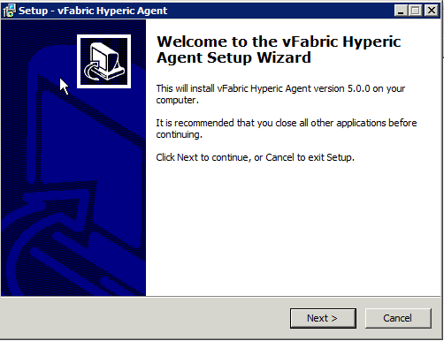
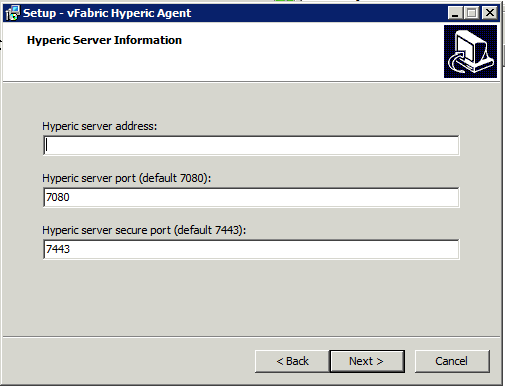
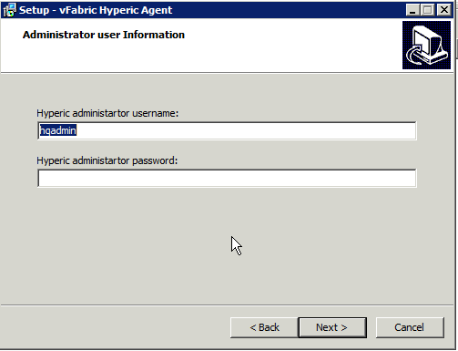
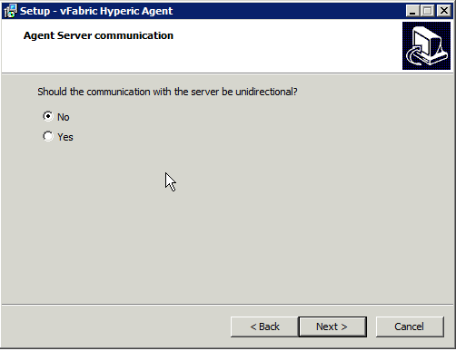
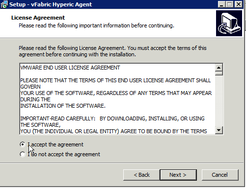
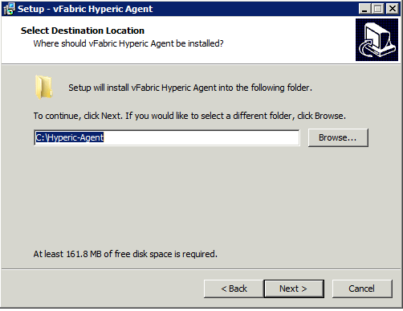

|
This page last changed on Oct 24, 2012 by mmcgarry.
About this page...
This page has instructions for performing a new installation of vFabric Hyperic Agent using the vFabric Hyperic Agent Windows Setup Wizard. Before running the wizard, see Hyperic Installation and Startup Process for information about where installation fits in the implementation process.
If you wish to upgrade an existing Hyperic deployment, please see Upgrade Hyperic Agent.
The instruction below assume you have already downloaded the vFabric Hyperic Agent Setup Wizard to the platform where you want to run the agent.
To install the vFabric Hyperic Agent:
- In Windows Explorer, double-click the vFabric-hyperic-hqee-agent-5.x.x.exe file.
- On the Welcome page click Next to start the installation.

- On the Hyperic Server Information page, enter the address of the Hyperic Server. The default server ports for plain text and SSL communication are displayed; edit the port values if different ports were configured at server installation, and click Next.

- The Administrator User Information page displays the default Hyperic Server admin username. If a different username was configured, enter it, and the enter the password configured for the account, and click Next.

- On the Agent Server Communication page, select "Yes" if you wish all communication between agent and server to be agent-initiated, and click Next. For more information, see Unidirectional Agent-Server Communications.

- On the License Agreement page, accept the agreement and click Next to continue.

- On the Select Destination Location page, accept the default installation directory, or browse to the desired directory, and click Next.

- On the Completing.. page, click Finish to complete the installation.
!screenshots^win-agent-install-10.png!
|